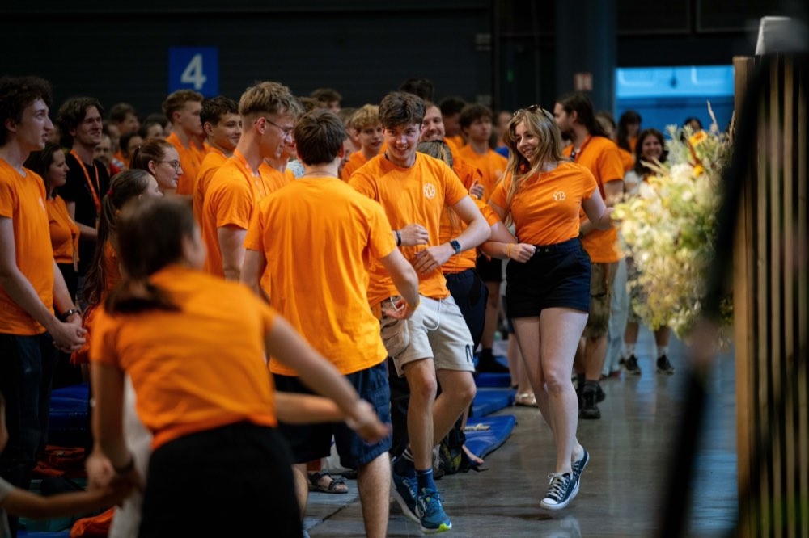

Pomeranč
Služba na dětské konferenci
Postaráš se o děti na dětské konferenci. Přidáš se k týmu více než 200 pomerančů.
Co budeš dělat
Během přípravných dnů s ostatními pomeranči chystáš program a připravuješ se na péči o děti. Během samotné konference se pak ve skupince staráš o děti, dopoledne i odpoledne.
Kdy
Neděle 4. 7. – neděle 11. 7. 2027, celý týden. Účast na přípravných dnech i na celé konferenci je nutná. Příjezd v neděli 4. 7. (později přijet nejde), odjezd v neděli 11. 7. odpoledne po úklidu pavilonu.
Hodí se pro tebe, když…
- máš rád(a) děti a baví tě se o ně starat,
- chceš strávit týden ve velké partě dalších mladých lidí,
- nebojíš se zodpovědnosti a máš aktivní přístup,
- můžeš být k dispozici celý týden.
Dotazy: detska.konference@gmail.com
Chci být pomerančem